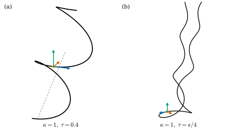

5.4 곡선론의 기본정리
이 절의 목표
- \(\R^3\)의 강체운동을 직교행렬로 정의하고, 강체운동이 호의 길이, 곡률, 비틀림률을 보존함을 증명할 수 있다.
- 곡선론의 기본정리를 진술하고 증명할 수 있다: \(\kappa \gt 0\)과 \(\tau\)를 주면 곡선이 있고(선형 상미분방정식), 강체운동을 제외하면 하나뿐이다.
- 곡률과 비틀림률이 상수인 곡선은 원과 나선뿐임을 보이고, \(\kappa \gt 0\) 가정이 빠지면 정리가 깨지는 예를 들 수 있다.
선수 지식
- 정리 5.3.1 (프레네-세레 공식)과 그 뒤의 반대칭성에 대한 관찰, 명제 5.2.2 (프레네 틀), 명제 5.2.7
- 평면곡선의 기본정리와 평면의 강체운동(정리 4.4.10, 따름정리 4.4.11, 4.4절)
- 선형 방정식의 해가 구간 전체에서 존재한다는 정리(정리 2.7.12), 해의 매끄러움(명제 2.7.3, 명제 2.7.11)
- 행렬식의 성질(정리 1.6.8), 그람 행렬식(따름정리 1.6.9), 외적(정의 1.6.15)
동기
5.3절에서 프레네 틀의 변화율이 \(\kappa\)와 \(\tau\)만으로 쓰임을 보았다. 이것을 거꾸로 읽으면 “\(\kappa\)와 \(\tau\)를 주면 틀이 정해지고, 틀의 \(\mathbf{t}\)를 적분하면 곡선이 정해진다”는 기대가 생긴다. 평면에서는 이 기대가 정리 4.4.10이었다. 거기서는 접선각 하나를 적분하면 끝났다. 공간에서는 틀 전체가 따르는 연립방정식을 풀어야 한다. 다행히 그 방정식은 선형이어서 정리 2.7.12로 구간 전체에서 풀린다.
“정해진다”의 뜻도 정확히 해야 한다. 곡선을 옮기거나 돌려도 \(\kappa\)와 \(\tau\)는 변하지 않을 것이므로, 기대할 수 있는 최선은 “옮기고 돌리는 것을 빼면 하나뿐”이다. 먼저 \(\R^3\)에서 “옮기고 돌리는 것”, 곧 강체운동을 정의한다.

\(\R^3\)의 강체운동
길이와 각을 보존하는 선형사상부터 정의한다. 행렬로 쓰면 조건이 간단해진다.
정의 5.4.1 (직교행렬, orthogonal matrix). \(n \times n\) 실수 행렬 \(A\)가
를 만족하면 직교행렬(orthogonal matrix)이라 한다.
명제 5.4.2 (직교행렬의 성질). \(A\)가 \(n \times n\) 실수 행렬이라 하자.
- (a) 다음은 동치다. (i) \(A\)는 직교행렬이다. (ii) 모든 \(v, w \in \R^n\)에서 \(\inner{Av}{Aw} = \inner{v}{w}\)이다. (iii) \(A\)의 열들이 정규직교기저다.
- (b) \(A\)가 직교행렬이면 \(\det A = \pm 1\)이고, \(A\)는 가역이며 \(A^{-1} = A^{\mathsf{T}}\)도 직교행렬이다. 두 직교행렬의 곱도 직교행렬이다.
- (c) \(n = 3\)이고 \(A\)가 직교행렬이면 모든 \(u, v \in \R^3\)에서 \(A(u \times v) = (\det A)\,(Au \times Av)\)이다.
증명 아이디어: \(A^{\mathsf{T}}A\)의 \((i, j)\) 성분은 \(i\)번째 열과 \(j\)번째 열의 내적이다. (c)는 외적의 정의 \(\inner{u \times v}{w} = \det(u, v, w)\)에 \(w = Aw'\)를 넣어 비교한다.
증명. (a) \(A\)의 열을 \(a_1, \dots, a_n\)이라 하면 \(A^{\mathsf{T}}A\)는 그람 행렬 \((\inner{a_i}{a_j})\)이다(따름정리 1.6.9). 따라서 (i)과 (iii)은 \(\inner{a_i}{a_j} = \delta_{ij}\)라는 같은 조건이다 (\(n\)개의 정규직교 벡터는 일차독립이므로 기저다). (i)이면 \(\inner{Av}{Aw} = (Av)^{\mathsf{T}}Aw = v^{\mathsf{T}}A^{\mathsf{T}}Aw = v^{\mathsf{T}}w\)이므로 (ii)이다. (ii)이면 \(v = e_i\), \(w = e_j\)로 두어 \(\inner{a_i}{a_j} = \inner{e_i}{e_j} = \delta_{ij}\)이므로 (iii)이다.
(b) 정리 1.6.8(a), (c)에서 \(1 = \det(A^{\mathsf{T}}A) = \det A^{\mathsf{T}}\det A = (\det A)^2\)이다. 따라서 \(\det A \neq 0\)이고 \(A\)는 가역이며(정리 1.6.8(b)), \(A^{\mathsf{T}}A = I_n\)에 오른쪽에서 \(A^{-1}\)을 곱하면 \(A^{\mathsf{T}} = A^{-1}\)이다. 그러면 \(AA^{\mathsf{T}} = I_n\), 곧 \((A^{\mathsf{T}})^{\mathsf{T}}A^{\mathsf{T}} = I_n\)이므로 \(A^{\mathsf{T}}\)도 직교행렬이다. \(A, B\)가 직교행렬이면 \((AB)^{\mathsf{T}}AB = B^{\mathsf{T}}(A^{\mathsf{T}}A)B = B^{\mathsf{T}}B = I_n\)이다.
(c) \(w \in \R^3\)이라 하자. (a)의 (ii)와 외적의 정의 (1.6.7)에서 \(\inner{A(u \times v)}{Aw} = \inner{u \times v}{w} = \det(u, v, w)\)이다. 한편 열이 \(Au, Av, Aw\)인 행렬은 \(A\)에 열이 \(u, v, w\)인 행렬을 곱한 것이므로 \(\inner{Au \times Av}{Aw} = \det(Au, Av, Aw) = \det A\,\det(u, v, w)\)이다(정리 1.6.8(a)). \(\det A = \pm 1\)이므로 두 식에서 \(\inner{A(u \times v) - \det A\,(Au \times Av)}{Aw} = 0\)이다. \(A\)가 가역이므로 \(Aw\)는 \(\R^3\)의 모든 벡터가 될 수 있고, 모든 벡터와 수직인 벡터는 \(0\)이다.
(c)는 행렬식이 \(1\)인 직교행렬만 외적을 그대로 보존하고, 행렬식이 \(-1\)이면 외적의 부호를 뒤집는다는 것이다. 외적이 공간의 방향(오른손 규칙)을 담고 있기 때문이다. “모양을 바꾸지 않는 움직임”으로는 방향도 보존하는 쪽을 택한다.
정의 5.4.3 (\(\R^3\)의 강체운동, rigid motion). \(A\)가 \(\det A = 1\)인 \(3 \times 3\) 직교행렬이고 \(c \in \R^3\)일 때
꼴의 사상을 \(\R^3\)의 강체운동(rigid motion)이라 한다. 두 곡선 \(\gamma, \tilde\gamma\colon I \to \R^3\)에 대해 \(\tilde\gamma = \psi \circ \gamma\)인 강체운동 \(\psi\)가 있으면 두 곡선이 합동이라 한다.
강체운동은 회전한 뒤 평행이동하는 사상이다. 명제 5.4.2(b)에서 강체운동의 합성과 역사상(\(p \mapsto A^{\mathsf{T}}(p - c)\))도 강체운동이다. 이 정의가 4장의 평면의 강체운동 \(p \mapsto R_\alpha p + c\)와 같은 이름을 가질 자격이 있음을 확인하자.
명제 5.4.4 (평면의 강체운동과의 일치).
- (a) \(2 \times 2\) 행렬 \(B\)가 직교행렬이고 \(\det B = 1\)일 필요충분조건은 어떤 \(\alpha \in \R\)에 대해 \(B = R_\alpha\)인 것이다.
- (b) \(\psi(q) = R_\alpha q + c\)(\(q, c \in \R^2\))가 평면의 강체운동이면 \(\Psi(x, y, z) = (\psi(x, y), z)\)는 \(\R^3\)의 강체운동이다.
- (c) 거꾸로 \(\Psi(p) = Ap + c\)가 \(\R^3\)의 강체운동이고 \(Ae_3 = e_3\), \(\Psi(0) \in \R^2 \times \{0\}\)이면, \(\Psi\)는 \(xy\)평면을 자기 자신으로 보내고 그 위에서 평면의 강체운동이다.
증명. (a) \(R_\alpha\)의 열 \((\cos\alpha, \sin\alpha)\), \((-\sin\alpha, \cos\alpha)\)는 정규직교이고 \(\det R_\alpha = \cos^2\alpha + \sin^2\alpha = 1\)이다. 거꾸로 \(B\)가 직교행렬이면 첫째 열은 단위벡터이므로 \((\cos\alpha, \sin\alpha)\)로 쓸 수 있고, 둘째 열은 이것과 수직인 단위벡터이므로 \(\pm(-\sin\alpha, \cos\alpha)\)이다(평면에서 한 단위벡터에 수직인 단위벡터는 두 개뿐이다). \(-\)이면 행렬식이 \(-\cos^2\alpha - \sin^2\alpha = -1\)이므로 \(\det B = 1\)에서 \(+\)이고 \(B = R_\alpha\)이다.
(b) \(\Psi(p) = \diag(R_\alpha, 1)\,p + (c, 0)\)이다. \(\diag(R_\alpha, 1)\)의 열 \((\cos\alpha, \sin\alpha, 0)\), \((-\sin\alpha, \cos\alpha, 0)\), \(e_3\)은 정규직교이고, 셋째 열로 전개하면 행렬식은 \(\det R_\alpha = 1\)이다.
(c) \(A\)는 내적을 보존하므로 \(v \perp e_3\)이면 \(\inner{Av}{e_3} = \inner{Av}{Ae_3} = \inner{v}{e_3} = 0\)이다. 곧 \(A\)는 \(xy\)평면 \(\R^2 \times \{0\}\)을 자기 자신으로 보내고, 거기에 제한한 사상의 행렬 \(B\)(\(A\)의 왼쪽 위 \(2 \times 2\) 블록)는 \(A = \diag(B, 1)\)을 만족한다(\(A\)의 셋째 열이 \(e_3\)이고, 첫 두 열의 셋째 성분이 \(0\)). \(A\)의 열이 정규직교이므로 \(B\)의 열도 정규직교이고, 셋째 열로 전개하면 \(\det B = \det A = 1\)이다. (a)에 의해 \(B = R_\alpha\)이다. \(c = \Psi(0)\)의 셋째 성분이 \(0\)이므로 \(\Psi\)는 \(xy\)평면 위에서 \(q \mapsto R_\alpha q + (c^1, c^2)\)이다.
예 5.4.5 (나사 운동과 나선, 기준 예제). \(z\)축 둘레의 회전 \(R^z_\theta = \begin{pmatrix} \cos\theta & -\sin\theta & 0 \\ \sin\theta & \cos\theta & 0 \\ 0 & 0 & 1 \end{pmatrix}\)은 명제 5.4.4(b)에서 \(\det = 1\)인 직교행렬이다. \(\psi_\theta(p) = R^z_\theta p + (0, 0, b\theta)\)(돌면서 올라가는 나사 운동)는 강체운동이고, 나선 \(\gamma(t) = (a\cos t, a\sin t, bt)\)에 대하여 덧셈정리에서
\[ \psi_\theta(\gamma(t)) = \big(a\cos(t + \theta),\ a\sin(t + \theta),\ bt + b\theta\big) = \gamma(t + \theta) \]이다. 나선은 나사 운동으로 자기 자신 위를 미끄러진다. 뒤의 명제 5.4.7과 합치면, 이것은 나선의 \(\kappa\)와 \(\tau\)가 상수라는 사실(예 5.2.6)의 계산 없는 설명이 된다(연습 5.4.1).
검증: verify/v-5-4-fundamental-theorem.py
비예 5.4.6 (반사는 강체운동이 아니다). \(\rho = \diag(1, 1, -1)\)(\(xy\)평면에 대한 반사)은 직교행렬이지만 \(\det\rho = -1\)이므로 강체운동이 아니다. 실제로 외적을 뒤집는다: \(\rho(e_1 \times e_2) = \rho e_3 = -e_3\)이지만 \(\rho e_1 \times \rho e_2 = e_1 \times e_2 = e_3\)이다(명제 5.4.2(c)). 반사는 길이와 각을 보존하지만 오른손 나선을 왼손 나선으로 바꾼다(명제 5.2.8(b)). 정의에서 \(\det A = 1\)을 요구하는 이유가 이것이다. 두 조건 가운데 \(A^{\mathsf{T}}A = I_3\)을 빼면 \(2I_3\) 같은 확대가 들어와 길이가 바뀐다.
명제 5.4.7 (강체운동은 호의 길이, 곡률, 비틀림률을 보존한다). \(\gamma\colon I \to \R^3\)이 정칙곡선이고 \(\psi(p) = Ap + c\)가 강체운동이라 하자. \(\tilde\gamma = \psi \circ \gamma\)는 정칙이고, 모든 \(t\)에서 \(\abs{\tilde\gamma'(t)} = \abs{\gamma'(t)}\), \(\tilde\kappa(t) = \kappa(t)\)이다. \(\kappa(t) \gt 0\)이면 \(\tilde{\mathbf{t}} = A\mathbf{t}\), \(\tilde{\mathbf{n}} = A\mathbf{n}\), \(\tilde{\mathbf{b}} = A\mathbf{b}\), \(\tilde\tau(t) = \tau(t)\)이다. (\(A\)가 \(\det A = -1\)인 직교행렬이면 나머지는 같고 \(\tilde{\mathbf{b}} = -A\mathbf{b}\), \(\tilde\tau = -\tau\)이다.)
증명. \(\tilde\gamma^{(k)} = A\gamma^{(k)}\)(\(k \ge 1\), \(c\)는 미분하면 사라진다)이고 \(A\)는 길이를 보존하므로(명제 5.4.2(a)) \(\abs{\tilde\gamma'} = \abs{\gamma'} \neq 0\)이다. 따라서 호의 길이 함수가 같고(여기까지는 연습 4.3.8에서 미리 보았다), \(\gamma\)의 방향을 보존하는 호의 길이 매개화가 \(\beta\)이면 \(\tilde\gamma\)의 것은 \(\psi \circ \beta\)이다. 그러니 \(\gamma\)가 단위속력이라 해도 된다. 그러면 \(\tilde\kappa = \abs{A\gamma''} = \abs{\gamma''} = \kappa\)이고, \(\kappa \gt 0\)이면 \(\tilde{\mathbf{t}} = A\gamma' = A\mathbf{t}\), \(\tilde{\mathbf{n}} = A\gamma''/\abs{A\gamma''} = A\mathbf{n}\)이다. 명제 5.4.2(c)에서 \(\tilde{\mathbf{b}} = A\mathbf{t} \times A\mathbf{n} = (\det A)\,A(\mathbf{t} \times \mathbf{n}) = (\det A)\,A\mathbf{b}\)이다. 미분하면 \(\tilde{\mathbf{b}}' = (\det A)A\mathbf{b}' = -(\det A)\,\tau\,A\mathbf{n} = -(\det A)\,\tau\,\tilde{\mathbf{n}}\)이므로 \(\tilde\tau = (\det A)\,\tau\)이다. 강체운동이면 \(\det A = 1\)이다.
곡선론의 기본정리
정리 5.4.8 (곡선론의 기본정리, fundamental theorem of the local theory of curves). \(I\)가 열린구간이고 \(\kappa\colon I \to (0, \infty)\), \(\tau\colon I \to \R\)가 매끄러운 함수라 하자.
- (a) (존재와 유일성) \(s_0 \in I\), \(p_0 \in \R^3\), 그리고 양의 방향 정규직교기저 \((\mathbf{t}_0, \mathbf{n}_0, \mathbf{b}_0)\)를 주면, 다음을 만족하는 곡선 \(\gamma\colon I \to \R^3\)이 꼭 하나 있다: \(\gamma\)는 호의 길이로 매개화되어 있고, 곡률이 \(\kappa\), 비틀림률이 \(\tau\)이며, \(\gamma(s_0) = p_0\)이고 \(s_0\)에서의 프레네 틀이 \((\mathbf{t}_0, \mathbf{n}_0, \mathbf{b}_0)\)이다.
- (b) (강체운동을 제외한 유일성) \(\gamma, \tilde\gamma\colon I \to \R^3\)이 호의 길이로 매개화되어 있고 둘 다 곡률이 \(\kappa\), 비틀림률이 \(\tau\)이면, 강체운동 \(\psi\)가 있어 \(\tilde\gamma = \psi \circ \gamma\)이다.
이 정리가 말하는 것. 양수인 곡률 함수와 비틀림률 함수는 아무렇게나 줄 수 있고, 그런 곡선이 반드시 있다. 그리고 호의 길이의 함수로서의 \((\kappa, \tau)\)는 공간곡선의 모양을 완전히 기록한다. 남는 자유는 출발점(평행이동, \(3\)차원)과 출발 자세(회전, \(3\)차원)뿐이다. 평면에서는 부호곡률 하나가 이 역할을 했다(따름정리 4.4.11).
증명 아이디어: 프레네-세레 공식을 미지의 틀 \((T, N, B)\)에 대한 \(\R^9\)의 선형 연립방정식으로 보고 정리 2.7.12로 푼다. 해가 늘 양의 정규직교기저로 남는다는 것은 그람 행렬이 만족하는 선형 방정식의 유일성에서 나온다. \(T\)를 적분하면 곡선이 되고, 유일성과 (b)는 방정식의 해의 유일성으로 귀결된다.
증명. 1단계: 연립방정식. \(K(s) = \begin{pmatrix} 0 & -\kappa(s) & 0 \\ \kappa(s) & 0 & -\tau(s) \\ 0 & \tau(s) & 0 \end{pmatrix}\)이라 하고, 열이 \(T, N, B\)인 \(3 \times 3\) 행렬값 함수 \(F(s)\)에 대한 방정식
를 생각하자((5.3.2)와 같은 꼴). \(F\)의 성분 \(9\)개를 \(\R^9\)의 벡터 \(x\)로 늘어놓으면 \(F'\)의 각 성분은 \(F\)의 성분들을 \(\kappa, \tau, -\kappa, -\tau\)를 계수로 결합한 것이므로, 이것은 매끄러운 행렬값 함수 \(M\colon I \to \R^{9 \times 9}\)에 대한 선형 방정식 \(x' = M(s)x\)이다. 정리 2.7.12(\(b = 0\))에 의해 해 \(F\colon I \to \R^{3 \times 3}\)가 구간 \(I\) 전체에서 존재하고 하나뿐이다. (그 증명의 국소 존재와 유일성은 정리 2.7.6에서 온다.) 해는 매끄럽다(명제 2.7.11(a)의 자율계에 명제 2.7.3을 쓴다).
2단계: 해는 늘 양의 정규직교기저다. \(G(s) = F(s)^{\mathsf{T}}F(s)\)(\(T, N, B\)의 그람 행렬)라 하자. 곱의 미분법과 \(F' = FK\)에서
이다. 이것도 \(G\)의 \(9\)개 성분에 대한 매끄러운 계수의 선형 방정식이고, \(G(s_0) = F_0^{\mathsf{T}}F_0 = I_3\)이다(\(F_0\)의 열이 정규직교). 한편 상수함수 \(G \equiv I_3\)도 이 방정식의 해다. \(K^{\mathsf{T}} = -K\)이므로 \(K^{\mathsf{T}}I_3 + I_3K = 0 = (I_3)'\)이기 때문이다. 초기값이 같으므로 정리 2.7.12의 유일성에서 모든 \(s\)에서 \(G(s) = I_3\), 곧 \(F(s)\)는 직교행렬이고 \((T(s), N(s), B(s))\)는 정규직교다. 명제 5.4.2(b)에서 \(\det F(s) \in \{1, -1\}\)이고, \(\det F\)는 연속이며 \(\det F(s_0) = 1\)(양의 방향)이므로 중간값 정리(따름정리 3.7.6)에 의해 모든 \(s\)에서 \(\det F(s) = 1\)이다.
3단계: 곡선. 성분마다 적분해
로 두자. \(\gamma\)는 매끄럽고 \(\gamma' = T\)이므로 \(\abs{\gamma'} = 1\), 곧 호의 길이로 매개화되어 있다. \(\gamma'' = T' = \kappa N\)이고 \(\kappa \gt 0\), \(\abs{N} = 1\)이므로 곡률은 \(\abs{\gamma''} = \kappa\)이고 주법선은 \(\gamma''/\abs{\gamma''} = N\)이다. \((T, N, B)\)가 양의 정규직교기저이므로 명제 1.6.17에서 종법선은 \(T \times N = B\)이고, \(B' = -\tau N\)이므로 비틀림률은 \(\tau\)이다 ((5.2.3)). 또 \(\gamma(s_0) = p_0\)이고 \(s_0\)에서의 틀은 \(F(s_0) = F_0\)이다. 이로써 (a)의 존재를 보였다.
4단계: (a)의 유일성. \(\tilde\gamma\colon I \to \R^3\)도 같은 조건을 만족한다고 하자. 정리 5.3.1에 의해 \(\tilde\gamma\)의 프레네 틀 \(\tilde F\)는 (5.4.3)의 해이고 \(\tilde F(s_0) = F_0\)이다. 1단계의 유일성에서 \(\tilde F = F\)이고, 특히 \(\tilde\gamma' = \tilde{\mathbf{t}} = T = \gamma'\)이다. \(\tilde\gamma - \gamma\)는 도함수가 \(0\)이고 \(s_0\)에서 \(0\)이므로 \(\tilde\gamma = \gamma\)이다.
5단계: (b). \(s_0 \in I\)을 하나 고르고, \(\gamma\)와 \(\tilde\gamma\)의 \(s_0\)에서의 프레네 틀을 열로 하는 행렬을 \(F_0\), \(\tilde F_0\)이라 하자. 둘 다 양의 정규직교기저이므로 행렬식이 \(1\)인 직교행렬이다 (명제 5.2.2, 명제 5.4.2(a)). \(A = \tilde F_0F_0^{\mathsf{T}}\)로 두면 \(A\)는 직교행렬의 곱이므로 직교행렬이고, \(\det A = \det\tilde F_0\,\det F_0 = 1\)이다 (정리 1.6.8(a), (c)). \(F_0^{\mathsf{T}}F_0 = I_3\)이므로 \(AF_0 = \tilde F_0\), 곧 \(A\)는 \(\gamma\)의 틀을 \(\tilde\gamma\)의 틀로 보낸다. \(c = \tilde\gamma(s_0) - A\gamma(s_0)\), \(\psi(p) = Ap + c\)로 두자. 명제 5.4.7에 의해 \(\psi \circ \gamma\)는 단위속력이고 곡률 \(\kappa\), 비틀림률 \(\tau\)를 가지며, \(\psi(\gamma(s_0)) = \tilde\gamma(s_0)\)이고 \(s_0\)에서의 틀은 \(AF_0 = \tilde F_0\)이다. 따라서 \(\psi \circ \gamma\)와 \(\tilde\gamma\)는 (a)의 같은 조건을 만족하고, (a)의 유일성에서 \(\psi \circ \gamma = \tilde\gamma\)이다.
2단계는 정리 5.3.1 뒤의 관찰을 뒤집은 것이다. 거기서는 “정규직교틀이면 변화율 행렬이 반대칭”이었고, 여기서는 “변화율 행렬이 반대칭이면 정규직교성이 유지된다”이다. 일반 매개변수의 곡선에서는 속력 \(v(t)\)도 기록해야 한다. 속력, 곡률, 비틀림률이 같은 두 정칙곡선은 합동이다(연습 5.4.4).
따름정리 5.4.9 (곡률과 비틀림률이 상수인 곡선). 호의 길이로 매개화된 곡선 \(\gamma\colon I \to \R^3\)의 곡률 \(\kappa \gt 0\)과 비틀림률 \(\tau\)가 상수라 하자.
- (a) \(\tau = 0\)이면 \(\gamma\)는 반지름 \(1/\kappa\)인 원의 호와 합동이다.
- (b) \(\tau \neq 0\)이면 \(\gamma\)는 다음 \(a, b\)를 갖는 나선의 호의 길이 매개화의 일부와 합동이다.
\[ a = \frac{\kappa}{\kappa^2 + \tau^2}, \qquad b = \frac{\tau}{\kappa^2 + \tau^2} \tag{5.4.6} \]
증명. (b) \(a \gt 0\), \(b \neq 0\)이고 \(a^2 + b^2 = (\kappa^2 + \tau^2)/(\kappa^2 + \tau^2)^2 = 1/(\kappa^2 + \tau^2)\)이므로 예 5.3.5에서 이 나선의 곡률은 \(a/(a^2 + b^2) = \kappa\), 비틀림률은 \(b/(a^2 + b^2) = \tau\)이다. 그 호의 길이 매개화 (4.3.2)를 \(I\)로 제한한 것과 \(\gamma\)는 같은 \(\kappa, \tau\)를 가지므로 정리 5.4.8(b)에 의해 합동이다. (a)는 같은 논증을 반지름 \(1/\kappa\)인 원(예 5.1.3, 예 5.2.6)에 쓴 것이다.
나선의 비틀림률의 부호가 \(b\)의 부호이므로, \(\tau \gt 0\)이면 오른손 나선, \(\tau \lt 0\)이면 왼손 나선과 합동이다. 오른손 나선과 왼손 나선은 곡률이 같아도 합동이 아니다(연습 5.4.2).
예 5.4.10 (곡률과 비틀림률에서 곡선으로). 그림 5.4.1은 (5.4.3)과 \(\gamma' = T\)를 \(s_0 = 0\), \(p_0 = 0\), \(F_0 = I_3\)으로 놓고 수치적으로 푼 것이다.
(a) \(\kappa \equiv 1\), \(\tau \equiv 0.4\)이면 따름정리 5.4.9에서 \(a = 1/1.16 \approx 0.862\), \(b = 0.4/1.16 \approx 0.345\)인 나선이다. 수치해는 이 나선을 강체운동한 것과 \(10^{-8}\) 이내로 일치한다. 축의 방향은 다르부 벡터 \(\tau\mathbf{t}_0 + \kappa\mathbf{b}_0 = (0.4, 0, 1)\)의 방향이다(따름정리 5.3.2).
(b) \(\kappa \equiv 1\), \(\tau(s) = s/4\)이면 식으로 풀리지 않는다. \(s = 0\) 근처에서는 \(\tau \approx 0\)이라 반지름 \(1\)인 원처럼 휘고, \(\abs{s}\)가 커지면 곡선은 매 순간 \(\kappa = 1\), \(\tau = s/4\)인 나선을 닮는다. 그 나선의 반지름 \(\kappa/(\kappa^2 + \tau^2) = 1/(1 + s^2/16)\)은 \(s\)가 커지면 \(0\)으로 가므로, 곡선은 점점 가늘게 감기면서 거의 곧게 나아간다.
검증: verify/v-5-4-fundamental-theorem.py, 그림 스크립트 figures/fig-5-4-1-curves-from-kappa-tau.py의 자기검사(틀의 정규직교성, 다시 잰 \(\kappa, \tau\))
비예 5.4.11 (\(\kappa \gt 0\) 가정은 빠질 수 없다). \(f\)를 예 2.2.20의 함수라 하고 두 곡선
\[ \alpha(t) = \big(t,\ f(t) + f(-t),\ 0\big), \qquad \beta(t) = \big(t,\ f(-t),\ f(t)\big) \]를 보자. \(\beta\)는 비예 5.2.10의 곡선이다. \(t \gt 0\)이면 \(\alpha(t) = (t, f(t), 0)\), \(\beta(t) = (t, 0, f(t))\)는 좌표 \(y\)와 \(z\)를 맞바꾼 것이고, \(t \le 0\)이면 \(\alpha(t) = \beta(t)\)이다. 따라서 모든 \(t\)에서 두 곡선의 속력과 곡률이 같고(맞바꿈은 거리를 보존한다), \(t = 0\)에서 잰 호의 길이 함수도 같다. 곡률이 \(0\)이 아닌 점에서는 두 곡선 모두 평면 조각 위에 있으므로 \(\tau = 0\)이다. 곧 호의 길이의 함수로서 \(\kappa\)와(정의되는 곳의) \(\tau\)가 같다. 그러나 \(\alpha\)는 \(xy\)평면에 있고 \(\beta\)는 어떤 평면에도 들어 있지 않다. 강체운동은 평면을 평면으로 보내므로 두 곡선은 합동이 아니다. \(\kappa\)가 \(0\)인 점(\(t = 0\))에서 \(\mathbf{n}\)과 \(\mathbf{b}\)가 정의되지 않으므로, 곡선은 그곳에서 “틀을 갈아탈” 수 있다. 정리 5.4.8의 증명은 \(\kappa \gt 0\)을 3단계에서 \(N\)을 주법선으로 알아보는 데 썼다.
검증: verify/v-5-4-fundamental-theorem.py
요약
- \(\R^3\)의 강체운동은 \(\psi(p) = Ap + c\)(\(A^{\mathsf{T}}A = I_3\), \(\det A = 1\))이다. 평면의 강체운동은 그 특수한 경우다(명제 5.4.4).
- 강체운동은 호의 길이, 곡률, 비틀림률을 보존하고 틀을 \(A\)로 옮긴다. \(\det A = -1\)인 직교변환은 비틀림률의 부호를 바꾼다(명제 5.4.7).
- 곡선론의 기본정리: 매끄러운 \(\kappa \gt 0\), \(\tau\)를 주면 초기 위치와 초기 틀마다 곡선이 꼭 하나 있고, 같은 \(\kappa, \tau\)를 갖는 두 곡선은 합동이다(정리 5.4.8). 존재는 선형 연립방정식의 전역 해, 정규직교성은 그람 행렬 방정식의 유일성, 합동은 해의 유일성에서 나온다.
- \(\kappa, \tau\)가 상수이면 원(\(\tau = 0\))이나 나선(\(a = \kappa/(\kappa^2 + \tau^2)\), \(b = \tau/(\kappa^2 + \tau^2)\))이다(따름정리 5.4.9).
- \(\kappa\)가 \(0\)이 되는 점이 있으면 같은 \(\kappa, \tau\)를 가져도 합동이 아닐 수 있다(비예 5.4.11).
다음 절에서는 \(\kappa\)와 \(\tau\)가 곡선의 모양을 국소적으로 어떻게 정하는지 구체적으로 본다. 한 점에서의 프레네 틀을 좌표축으로 삼아 곡선을 테일러 전개한 국소 표준형을 구하고, 세 좌표평면에 비친 곡선의 그림자와 비틀림률의 부호의 기하적 뜻을 읽는다.
연습문제
연습 5.4.1 ★ 예 5.4.5와 명제 5.4.7만 써서, 계산 없이 나선의 곡률과 비틀림률이 상수임을 보여라.
풀이
나선 \(\gamma\)의 속력은 상수 \(w = \sqrt{a^2 + b^2}\)이므로 \(t\)와 호의 길이는 \(s = wt\)로 대응하고, 곡률과 비틀림률을 \(t\)의 함수로 보아도 된다. \(\theta\)를 고정하자. 명제 5.4.7에 의해 \(\psi_\theta \circ \gamma\)의 곡률과 비틀림률은 \(t\)에서 \(\kappa(t)\), \(\tau(t)\)이다. 한편 \(\psi_\theta \circ \gamma(t) = \gamma(t + \theta)\)는 \(\gamma\)를 방향을 보존해 재매개화한 것이므로 \(t\)에서의 곡률과 비틀림률은 \(\kappa(t + \theta)\), \(\tau(t + \theta)\)이다(명제 5.1.2(b), 명제 5.2.8(a)). 따라서 모든 \(t, \theta\)에서 \(\kappa(t + \theta) = \kappa(t)\), \(\tau(t + \theta) = \tau(t)\)이고, 두 함수는 상수다.
연습 5.4.2 ★ \(a \gt 0\), \(b \gt 0\)일 때 오른손 나선 \((a\cos t, a\sin t, bt)\)와 왼손 나선 \((a\cos t, a\sin t, -bt)\)가 곡률은 같지만 합동이 아님을 보여라. 둘은 어떤 사상으로 서로 옮겨지는가?
연습 5.4.3 ★ 곡률과 비틀림률이 모두 \(1\)인 단위속력 곡선은 어떤 나선과 합동인가? 곡률이 \(2\)이고 비틀림률이 \(0\)이면 어떤가?
풀이
(5.4.6)에서 \(a = 1/2\), \(b = 1/2\)이다. 곧 반지름 \(1/2\)이고 한 바퀴에 높이가 \(\pi\)만큼 올라가는 오른손 나선 \((\tfrac12\cos t, \tfrac12\sin t, \tfrac12 t)\)(를 호의 길이로 매개화한 것)과 합동이다. 확인: \(a/(a^2 + b^2) = (1/2)/(1/2) = 1\), \(b/(a^2 + b^2) = 1\). 곡률 \(2\), 비틀림률 \(0\)이면 따름정리 5.4.9(a)에서 반지름 \(1/2\)인 원이다.
검증: verify/v-5-4-fundamental-theorem.py
연습 5.4.4 ★★ \(\gamma, \tilde\gamma\colon I \to \R^3\)이 정칙곡선이고 모든 \(t\)에서 \(\abs{\gamma'(t)} = \abs{\tilde\gamma'(t)}\), \(\kappa(t) = \tilde\kappa(t) \gt 0\), \(\tau(t) = \tilde\tau(t)\)라 하자. 두 곡선이 합동임을 보여라. 속력이 같다는 가정을 빼면 어떻게 되는가?
풀이
\(t_0 \in I\)을 고르고 두 곡선의 호의 길이 \(s(t) = \int_{t_0}^t \abs{\gamma'}\), \(\tilde s(t) = \int_{t_0}^t \abs{\tilde\gamma'}\)를 잡으면 속력이 같으므로 \(s = \tilde s\)이고, 방향을 보존하는 호의 길이 매개화 \(\beta = \gamma \circ h\), \(\tilde\beta = \tilde\gamma \circ h\)(\(h = s^{-1}\))는 같은 구간 \(s(I)\)에서 정의된다. 정의에서 \(\beta\)의 곡률은 \(\kappa^\beta(\sigma) = \kappa(h(\sigma)) = \tilde\kappa(h(\sigma)) = \tilde\kappa^{\tilde\beta}(\sigma)\)이고 비틀림률도 같다. 정리 5.4.8(b)에 의해 강체운동 \(\psi\)가 있어 \(\tilde\beta = \psi \circ \beta\)이고, 오른쪽에서 \(s\)를 합성하면 \(\tilde\gamma = \psi \circ \gamma\)이다. 속력 가정이 없으면 성립하지 않는다. 예를 들어 반지름 \(1\)인 원 \((\cos t, \sin t, 0)\)과 \((\cos 2t, \sin 2t, 0)\)은 \(t\)의 함수로서 \(\kappa \equiv 1\), \(\tau \equiv 0\)이 같지만, \((0, \pi)\)에서의 길이가 \(\pi\)와 \(2\pi\)로 달라(자취는 반원과, 한 점을 뺀 원) 합동이 아니다. 강체운동은 속력, 따라서 길이를 보존한다(명제 5.4.7).
연습 5.4.5 ★★ \(xy\)평면의 원 \(\gamma(s) = (r\cos(s/r), r\sin(s/r), 0)\)과 방향을 뒤집은 원 \(\bar\gamma(s) = (r\cos(s/r), -r\sin(s/r), 0)\)은 부호곡률이 \(1/r\)과 \(-1/r\)로 다르지만 \(\R^3\)의 곡선으로는 \(\kappa\)와 \(\tau\)가 같다. 정리 5.4.8(b)가 주는 강체운동을 구하고, 그것이 \(xy\)평면 위에서는 평면의 강체운동이 아님을 보여라.
풀이
두 곡선 모두 \(\kappa = 1/r\), \(\tau = 0\)이다. \(A = \diag(1, -1, -1)\)(\(x\)축 둘레의 \(\pi\) 회전)은 \(A^{\mathsf{T}}A = I_3\), \(\det A = 1\)이고 \(A\gamma(s) = \bar\gamma(s)\)이므로 \(\psi(p) = Ap\)가 구하는 강체운동이다. (정리의 증명대로 만들어도 이것이 나온다. \(s = 0\)에서 \(\gamma\)의 틀은 \((e_2, -e_1, e_3)\), \(\bar\gamma\)의 틀은 \((-e_2, -e_1, -e_3)\)이고 \(A = \tilde F_0F_0^{\mathsf{T}} = \diag(1, -1, -1)\)이다.) \(\psi\)는 \(xy\)평면을 자기 자신으로 보내지만 거기서 \((x, y) \mapsto (x, -y)\), 곧 반사이고 행렬식이 \(-1\)이므로 \(R_\alpha\)가 아니다(명제 5.4.4(a)). \(Ae_3 = -e_3\)이라 명제 5.4.4(c)의 가정이 성립하지 않는다. 평면곡선의 분류에 부호곡률이 필요한 이유가 이것이다. 공간에서는 평면을 뒤집어 올려놓는 회전이 있어서 \(\kappa_s\)와 \(-\kappa_s\)를 구별하지 못한다.
검증: verify/v-5-4-fundamental-theorem.py
연습 5.4.6 ★★★ \(\gamma\colon \R \to \R^3\)이 호의 길이로 매개화되어 있고 \(\kappa \gt 0\)이며, 모든 \(h \in \R\)에 대해 강체운동 \(\psi_h\)가 있어 모든 \(s\)에서 \(\psi_h(\gamma(s)) = \gamma(s + h)\)라 하자(곡선이 자기 자신 위로 미끄러질 수 있다). \(\gamma\)가 원이거나 나선과 합동임을 보여라. 거꾸로 원과 나선은 이 성질을 가짐을 보여라.
풀이
명제 5.4.7에서 \(\psi_h \circ \gamma\)는 \(s\)에서 곡률 \(\kappa(s)\), 비틀림률 \(\tau(s)\)를 가진다. 한편 \(\psi_h \circ \gamma = \gamma(\cdot + h)\)는 평행이동한 매개변수의 곡선이므로 \(s\)에서 곡률 \(\kappa(s + h)\), 비틀림률 \(\tau(s + h)\)를 가진다. 따라서 모든 \(s, h\)에서 \(\kappa(s + h) = \kappa(s)\), \(\tau(s + h) = \tau(s)\)이므로 \(\kappa\), \(\tau\)는 상수다. 따름정리 5.4.9에 의해 \(\gamma\)는 원(\(\tau = 0\))이나 나선과 합동이다.
거꾸로 나선의 호의 길이 매개화 \(\beta(s) = \gamma(s/w)\)(\(w = \sqrt{a^2 + b^2}\))에는 \(\psi_{h/w}\)(예 5.4.5의 나사 운동, \(\theta = h/w\))가 \(\psi_{h/w}(\beta(s)) = \gamma(s/w + h/w) = \beta(s + h)\)를 준다. 원은 \(b = 0\)인 경우로 \(z\)축 둘레의 회전이다. \(\gamma\)가 이들과 합동이면, 곧 \(\gamma = \varphi \circ \beta\)(\(\varphi\)는 강체운동)이면 \(\varphi \circ \psi \circ \varphi^{-1}\)이 \(\gamma\)에 대한 강체운동이다(강체운동의 합성과 역사상은 강체운동이다).